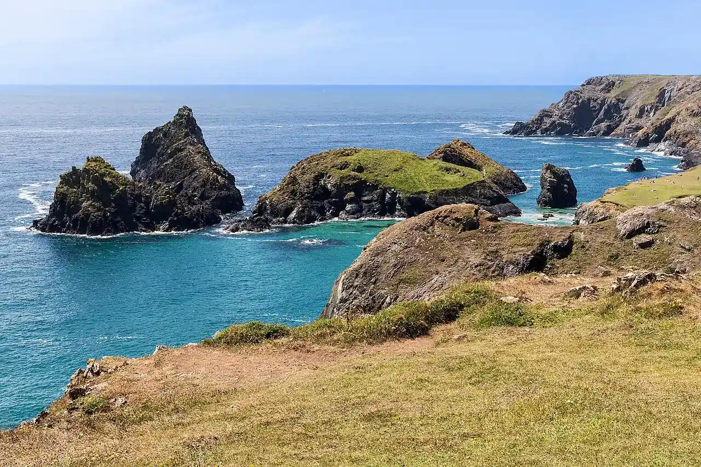

Kynance Cove
Péninsule du Lizard, Cornouailles, Royaume-Uni · baignade, snorkeling

Petite crique de sable blanc entourée d’îlots de serpentinite sombre, sur la péninsule du Lizard. À marée basse, l’eau turquoise et les rochers invitent à une baignade tranquille et à un peu de snorkeling.
- Lieu
- Péninsule du Lizard, Cornouailles, Royaume-Uni
- Niveau
- Débutant
- Activités
- baignade, snorkeling
- Type d'eau
- Mer / océan
- Coordonnées
- 49.97, -5.23 (position approximative du secteur)
Dangers à connaître
- La marée montante recouvre la plage et peut isoler les promeneurs.
- Rochers et houle qui se creuse vite par vent d’ouest.
Le conseil d'Ocean Buddy
Viens à marée basse : à marée haute la plage disparaît presque entièrement. Le parking se remplit tôt en été.
Ouvrir dans Ocean Buddy Télécharger sur l'App Store
Source : Fiche Ocean Buddy · septembre 2026 · à vérifier localement.